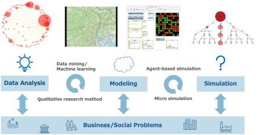

System, model, simulation.
芝浦工業大学 システム理工学部 電子情報システム学科 後藤裕介研究室（社会シミュレーション研究室）のウェブサイトです．
後藤研究室では社会的な課題や企業の経営課題を対象として，データ分析とシミュレーションを活用した研究に取り組んでいます．
新着情報
- 2021-11-22: 後藤裕介が「公益社団法人計測自動制御学会 2021年システム・情報部門 論文賞」を受賞しました．
- 2021-06-13: 後藤裕介が「一般社団法人経営情報学会 2021年度年次大会 優秀萌芽研究賞」を受賞しました．
- 2021-06-10: 後藤裕介が「IEEE CYBCONF 2021 Best Paper Award」を受賞しました．[link]
基礎情報 2022-01-20時点
- 住所：〒337-8570 埼玉県さいたま市見沼区深作307 芝浦工業大学大宮キャンパス 5号館5421 アクセス
- メンバー：教員1名，学部4年生3名
配属を検討しているみなさんへ
誰にとっても一番良い研究室というのは無いと考えています．みなさん自身にとって相性がよさそうで，楽しく学び究めることができる選択につながることを願い，少し長いですが以下に文章を書きました．
後藤研究室の研究アプローチ
後藤研究室では社会的な課題や企業の経営課題を対象として，データ分析とシミュレーションにより「興味深い現象がなぜ起きるのか？」や「どんな施策が現状を改善できるのか？」を明らかにすることなどの意思決定支援に関連した研究をしています．社会や組織だから起きる問題を「しくみ」や「しかけ」を分析・設計・改良して，人々の幸せに貢献したい，が研究に共通する想いです．
後藤研究室では社会的な課題や企業の経営課題を対象にして，データ（アンケート，インタビュー，購買履歴などビッグデータ）を「データマイニング」や「質的研究法」で分析し，データから本質を見出します．見出した本質をシミュレーションが実行可能なように操作的なモデル（アルゴリズム）をつくり，しくみを表現します．モデルをシミュレーションプログラムとして実装し，「エージェントベース・シミュレーション」や「マイクロ・シミュレーション」を利用して，考えたアイディアを仮想的に試します．このとき，モデルを関与者と一緒に作成する「参加型モデリング」やモデルのポイントをゲームとして表現する「ゲーミング＆シミュレーション」，様々な施策についてwhat-if分析を行う「シナリオ分析」を行います．
研究室の特徴（こんなことに関心がある人は向いている（と考えています））
研究室として大切にしたいと考えていることは「考えぬく」ことです．研究活動自体は知的生産活動ですから，うまくいかないこともたくさんあります．どちらかというと悩みながら暗いトンネルを延々と進んでいくようなプロセスです．このとき，一人だけで考えるのではなく，教員も含め所属学生皆でディスカッションしながら，共に考えていくことができると良いと考えています．ディスカッションの中で（大抵違っていますが）「わかった！」「こうかもしれない！」ともやもやしたものに光がさす瞬間は，表現が難しいですが，とても素敵な瞬間ですし研究の醍醐味であると考えています．
言うまでもなく，研究室は共創システムです．研究室をより良い場所にしていきたいという意気がある学生さんとともに良い研究室をつくりあげていきたいと考えています．後藤研究室では多くの研究はプロジェクトベースで進められています．その中には，外部と連携した共同研究も多数存在します．共同研究は，企業，NPO，他大学，学校と行われることが多いです．共同研究に参加することは，企業が保有しているデータを使わせていただくことができるため魅力的な研究を行うことができたり，他大学と連携することで技術面でのコラボレーションができるため質の高い研究を行うことができる可能性があります．これらは外部とのやり取りも含めて，みなさん自身を成長させることにもつながります．一方で，責任を持って進めることも求められますので，研究に対して熱意を持って取組んでいただくことを期待しています．
研究・教育の一環として継続的に学外のデータ解析コンペティションに参加しています．昨年度からは他大学との連合チームで参加していて，成果が学会発表や大会での受賞にもつながっています．実データを対象として，他メンバーと共同で検討しながら問題設定して研究する活動はみなさんにとってプログラミング能力，データ分析能力，プレゼンテーション能力，ディスカッション能力を総合的に育成するとても良い機会だと考えています．一方で，チーム活動でもありますので，責任を持って進めることも求められます．このため，研究に対して熱意を持って取組んでいただくことを期待しています．
過去の研究テーマ（学部，修士）
2021年度から芝浦工業大学での研究室ができました．このため，2020年度までは岩手県立大学の学生による研究テーマです．
修士課程
- 2020年度
- 商業施設における波及効果を考慮したテナントミックスの分析―来店回数予測モデルと波及効果シミュレーションに基づいた分析手法の提案
- 2019年度
- 回遊と購買との共起性に着目した小売店舗の商品と売場の分析手法
- 大規模災害の復興過程における経済支援政策シミュレータの開発
学部生
- 2019年度
- 商業施設における顧客の店舗利用特性に基づくGRFM分析手法の提案
- 集落コミュニティ内送迎の成立可能性のシミュレーション分析
- 顧客個人の店舗内回遊と購買に基づく例外的な回遊の分析
- 避難シミュレーション研究におけるモデルの妥当性評価の支援システムの開発
- 2018年度
- 地理的に分散した複数高等学校を対象とする課題研究の学習環境
- 購買履歴に基づく顧客ロイヤルティの強さと変化傾向の評価指標の提案
- 時空間データと生活時間の統計を利用した自然なパーソントリップの生成手法の提案
- 大規模災害復興過程の経済支援政策シミュレーションにおける住民属性の推定結果がもたらす影響の分析
- 2017年度
- 震災復興過程における労働市場特性を考慮した雇用創出事業の効果分析
- 震災復興過程における地域の産業構造変化を考慮した雇用創出事業効果の分析
- 売買履歴の分析による古着売買の価格査定支援モデルの提案
- 世帯内送迎を考慮した次世代交通サービス導入効果分析のためのシミュレータ開発
- 2016年度
- プレイヤのキャリア成熟度に着目したキャリア学習ゲームの効果分析
- 質的研究法によるデータを用いた地域固有の交通手段選択プロセスと交通需要の分析
- 参加者間の交流持続を実現するタブレットPC教室の提案
- 2015年度
- 行動ルールの多様性を考慮した講座配属制度のシミュレーション分析
- 自身の価値観を考慮した情報サービス産業人材のキャリア学習ゲームの効果分析
- 発表・聴講両場面におけるプレゼンテーション能力の継続的学習支援システムの開発
- コミュニケーションの活性化を意図するタブレットPC教室の企画・運営と効果分析
- 地域特性がCFWプログラム効果に与える影響のシミュレーション分析
- 2014年度
- 多様性と曖昧性を考慮した主体的な学びの支援システムの有効性評価
- 段階的ヒント提示とピアフィードバックによる表現力の学習支援システムの開発
- 自身の価値観を考慮した情報サービス産業人材のキャリア学習ゲームの開発
- 震災復興過程のCFWプログラムに関する経験則成立条件のシミュレーション分析
- 2013年度
- 主観的な実力の見積もりを訂正する学習成果可視化システムの提案
- 学習目標の多様性と曖昧性を考慮した主体的な学びの支援システムの開発
- 段階的ヒント提示による発言意欲向上支援システムの開発
- 2012年度
- 東日本大震災による情報システムに関する被災自治体の意識変化の分析
- 初等教育の算数科授業におけるICT機器活用が児童の話し合いに与える効果の多角的視点による検討
- 仮設住宅支援員事業における支援員のICTスキル向上に関する研究
- 2011年度
- 業績評価制度導入効果理解のためのシミュレータ開発
- 中小企業連携支援システムの実態調査及び現状の評価と分析
配属にあたってよくあるご質問 2022-01-20時点
これまでにみなさんに頂いたご質問への回答を整理しています．お読みいただき，ご不明の点があれば遠慮なく教員までお問い合わせください．
研究テーマはどのようにして決めますか？
研究テーマはこちらでいくつかのテーマ案をお示しして，みなさんと相談しながら決めていきます．後藤研究室では企業との共同研究も行っており，共同研究テーマにも取り組むことができます．過去の研究テーマも参考にしてください．
研究はどのようにして進めていくのでしょうか？
2年目の新しい研究室ですので，みなさんと相談しながら決めていきたいと思っています．毎日この時間はいるという意味でのコアタイムは設定しない予定です．ただし，週に1・2回，この時間帯は一緒に勉強をするという意味の「もくもく会」（みんなであつまり，黙々と各自勉強する）を設定したいと考えています．
また，みなさんの毎日の進捗状況や相談ごとを日報として報告していただき，皆さんの状況をふまえたアドバイスを適宜行う形でサポートしています．研究は日々の積み上げです．少し抵抗があるかもしれませんが，教員のことはダイエットをするときのトレーナーだと思って，目的を達成するためにともに頑張りましょう．
どのような知識・スキルが事前に必要でしょうか？
知識・技能について，無いといけない，というものは考えていません．プログラミングはPython言語を利用する予定ですので馴染みがあれば（あるいは抵抗感がなければ）スムーズだと思います．
あえて，書かせていただくとすれば，研究の内容に関心・興味があって，楽しく研究してみたい！とお感じになられているかどうかを大切な基準として考えています．後藤の経験からも知識・技能は興味があればあとからついてくるものです．みなさんが面白そう！と感じてもらっていれば，研究室で楽しく研究できてみなさんの成長にもつながると思います．
どのような授業を履修していると良いでしょうか？
受講されている授業で「よい」「優先する」ことはありません．研究室は社会よりのため，たとえば「社会と数理」「社会システム科学概論」などを履修されたり，関心をお持ちの方が向いていると思っています．
定員を超過した際の選考基準は何でしょうか？
選考基準としては（1）志望動機と（2）成績等を総合して選考します．ただし，成績も重要ではありますが，研究室では研究を行うので，やってみたいことがあったり，関心があることがより一層重要であると思っています．後藤研究室のテクニカルセミナーを受講されていたことは，関心があることの材料の一つになります．
研究業績
2021年度
- Y. Ishimaru, H. Morita, and Y. Goto, "In-Store Journey Model with Purchasing Behavior Based on In-Store Journey Data and ID-POS Data," The Review of Socionetwork Strategies, Vol.15, No.1, pp.215-237, 2021 (April)
- Y. Goto, H. Ichikawa, H. Morita, and Y. Shirai, "Toward Simulation Analysis of Subsidy Payment Policies Amid COVID-19 Pandemic: Multi-Objective Optimization in Agent-Based Simulation," IEEE CYBCONF 2021, p.127, online, 2021(June)
- K. Takahashi and Y. Goto, "Forecasting Potential Sales of Bread Products at Stores by Network Embedding," IEEE CYBCONF 2021, pp.114-119, online, 2021(June) Best Paper Award
- 後藤裕介，市川尚，白井康之，森田裕之，"経済支援政策分析のための社会シミュレーション基盤にむけて，" 計測自動制御学会 システム・情報部門学術講演会SSI2021，pp.268-269，オンライン，2021年11月．
- 後藤裕介，白井康之，森田裕之，河合亜矢子，"Web調査における回答者のSatisficeに関する影響，" 経営情報学会2021年全国研究発表大会，4 pages，2021年11月.
- 河合亜矢子，後藤裕介，滝澤美帆，"日本小売業のDXをめぐる構造の分析，" 経営情報学会2021年全国研究発表大会，4 pages，2021年11月．
- 高橋耕平，市川尚，後藤裕介，"COVID-19感染対策による経済影響分析シミュレータの開発，" 経営情報学会2021年度年次大会，pp.60-61，オンライン，2021年6月．一般社団法人経営情報学会 2021年度年次大会 優秀萌芽研究賞
- 工藤大輝，市川尚，後藤裕介，"政策議論を促す多目的最適化社会シミュレーション手法の開発，" 経営情報学会2021年度年次大会，pp.56-57，オンライン，2021年6月．
- 河合亜矢子，白井康之，森田裕之，後藤裕介，"利用者目的と提供サービスの多様性を考慮したサービス評価に関する研究，" 日本経営工学会2021年春季大会，2 pages，オンライン，2021年5月．